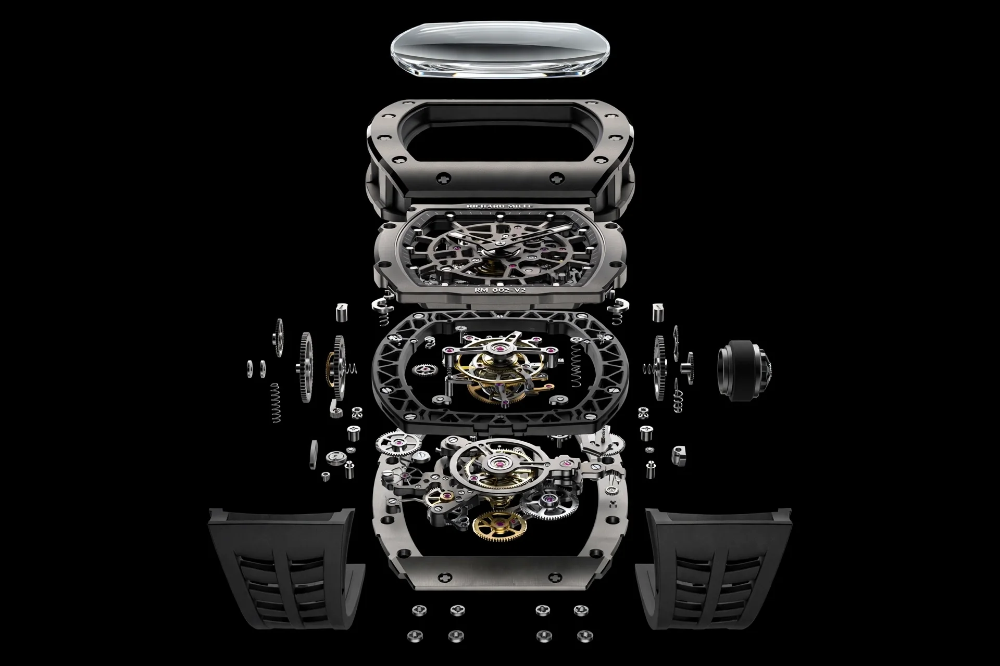
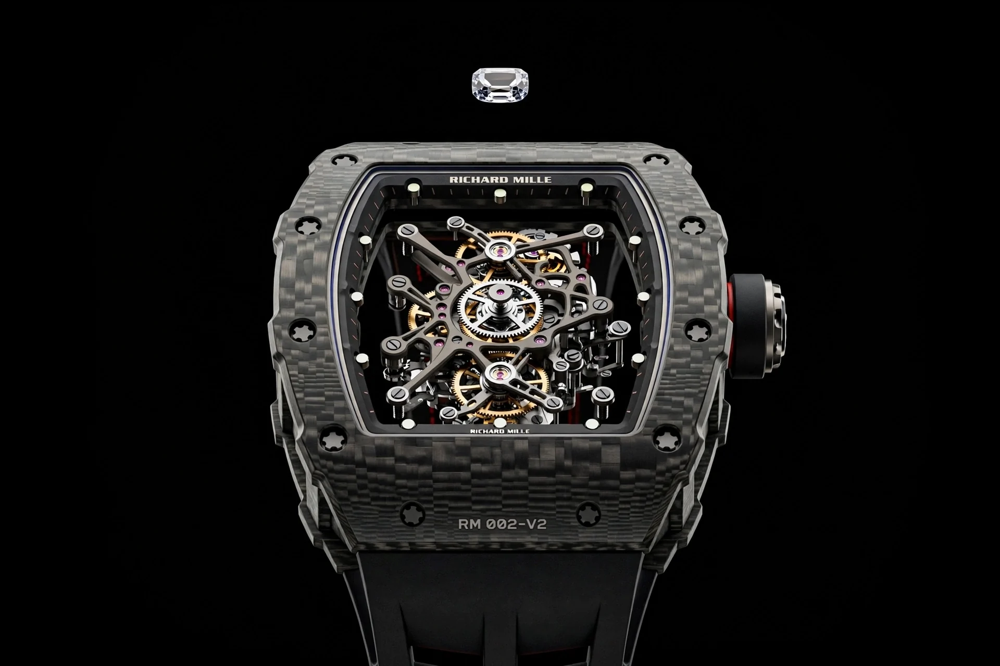

1951
Draguignan, Francia
El origen
Nace Richard Mille. Apasionado de los coches, los aviones y la mecánica de precisión, desarrolla su carrera en la industria relojera antes de dar su nombre a una marca propia.
RM 002-V2 · Tourbillon
Desde 1999, cada reloj se concibe como un prototipo de competición. Deslice para desmontarlo pieza a pieza.
Anatomía
Manifiesto
Richard Mille no fabrica accesorios. Construye máquinas. Cada reloj nace como nacería un monoplaza de Fórmula 1: con una obsesión por el peso, por la resistencia, por los materiales que nadie había llevado antes a la muñeca. Sin concesiones a la tradición. Sin miedo a la complejidad.
Historia · 1951 — Hoy
1951
Draguignan, Francia
Nace Richard Mille. Apasionado de los coches, los aviones y la mecánica de precisión, desarrolla su carrera en la industria relojera antes de dar su nombre a una marca propia.
1999
Les Breuleux, Jura suizo
Junto a Dominique Guenat funda la casa con una idea radical: aplicar al reloj la tecnología, los materiales y la lógica de la competición automovilística.
2001
RM 001 Tourbillon
Caja tonel, calibre esqueletizado y una ambición técnica sin precedentes. El RM 001 sacude la alta relojería y fija el lenguaje de la marca.
2010
RM 027 · Rafael Nadal
Un tourbillon diseñado para llevarse en la pista, en pleno partido de Grand Slam. El reloj se convierte en equipamiento deportivo de élite.
2013
Carbon TPT®
Capas finísimas de filamentos de carbono, superpuestas y prensadas en caliente. Cada caja muestra un veteado único, imposible de repetir.
2017
RM 50-03 McLaren F1
Un cronógrafo ratrapante con tourbillon de alrededor de 40 gramos, correa incluida, gracias a un composite reforzado con grafeno.
2022
RM UP-01 Ferrari
El reloj mecánico más delgado del mundo en su presentación. Una demostración de que el límite está para desplazarlo.
Hoy
Producción limitada
Cada referencia sigue pensándose como un laboratorio. La siguiente ya se está probando en algún lugar del Jura.
Conocerla en boutique
Ingeniería
La caja no es un envoltorio: es el chasis. Tres cuerpos unidos por tornillos spline de titanio, con juntas que absorben vibraciones e impactos.
Platina y puentes calados hasta el límite para dejar ver el movimiento y aligerarlo sin perder un ápice de rigidez.
Una jaula que gira sobre sí misma una vez por minuto para compensar el efecto de la gravedad sobre el órgano regulador.
Materiales
Del paddock y la industria aeroespacial a la muñeca. Pase el cursor sobre cada material para verlo bajo la luz.
Cientos de capas de filamentos de carbono de un máximo de 30 micras, entrecruzadas y polimerizadas. Ligero, rígido, irrepetible.
Filamentos de sílice tratados con resina coloreada. La misma técnica que el carbono, con una luz completamente distinta.
Aleación aeroespacial de titanio, aluminio y vanadio. Platinas, puentes y tornillos más ligeros y resistentes a la corrosión.
Dureza 9 en la escala de Mohs, solo superado por el diamante. Transparencia absoluta para un calibre que no tiene nada que ocultar.

Calibre esqueletizado con puentes de titanio Corona dinamométrica con inserto de caucho Caja tonel en Carbon TPT®, tres cuerpos Zafiro tallado, como una gemaLa pieza
La segunda generación de un clásico de la casa. Tourbillon, calibre esqueletizado y una caja de carbono que convierte cada ejemplar en una pieza única.
Colección
Seis familias, una misma filosofía. Todas las piezas se presentan exclusivamente en boutique, con cita previa.
Boutiques
Las piezas Richard Mille solo se adquieren en boutiques oficiales y distribuidores autorizados. Elija la suya y reserve una visita privada.
Solicitud recibida
Referencia